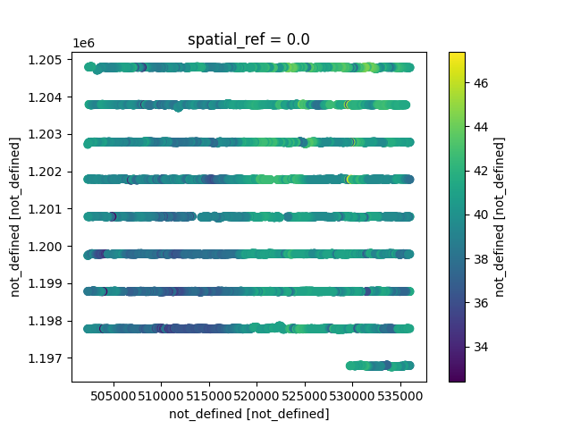

Note
Click here to download the full example code
CSV to NetCDF conversion
Dataset Reference: Burton, B.L., Minsley, B.J., Bloss, B.R., and Kress, W.H., 2021, Airborne electromagnetic, magnetic, and radiometric survey of the Mississippi Alluvial Plain, November 2018 - February 2019: U.S. Geological Survey data release, https://doi.org/10.5066/P9XBBBUU.
import matplotlib.pyplot as plt
from os.path import join
from gspy import Survey
Convert the CSV data folder to netcdf
# raise Exception("Get the resolve model 0 working. json files need changing etc.")
# Path to example files
data_path = '..//supplemental//region//MAP'
metadata = join(data_path, "data//Resolve_survey_md.json")
# Establish the Survey
survey = Survey(metadata)
# Define input CSV-format data file and associated variable mapping file
d_data = join(data_path, 'data//Resolve.csv')
d_supp = join(data_path, 'data//Resolve_data_md.json')
# Read data and format
survey.add_tabular(type='csv', data_filename=d_data, metadata_file=d_supp)
# Define input CSV-format model file and associated variable mapping file
m_data = join(data_path, 'model//Resolve_model.csv')
m_supp = join(data_path, 'model//Resolve_model_md.json')
# Read model data and format
survey.add_tabular(type='csv', data_filename=m_data, metadata_file=m_supp)
# Save NetCDF file
d_out = join(data_path, 'model//Resolve.nc')
survey.write_netcdf(d_out)
Read in the netcdf files
new_survey = Survey().read_netcdf(d_out)
print(type(new_survey))
print(type(new_survey.tabular[0]))
<class 'gspy.src.classes.survey.Survey.Survey'>
<class 'xarray.core.dataset.Dataset'>
Plotting
plt.figure()
new_survey.tabular[0].gs_tabular.scatter('DTM', vmin=30, vmax=50)
plt.xlim([500000, 540000])
plt.ylim([1175000, 1210000])
plt.figure()
new_survey.tabular[1].gs_tabular.scatter('DEM')
# print(new_survey.tabular[0]['qd_final'])
print(new_survey.tabular[1])
plt.show()

- 
<xarray.Dataset>
Dimensions: (index: 9999, layer_depth: 30, nv: 2)
Coordinates:
spatial_ref float64 ...
* index (index) int32 0 1 2 3 4 5 ... 9994 9995 9996 9997 9998
* layer_depth (layer_depth) float64 0.5 1.55 2.7 ... 109.2 119.7 132.5
* nv (nv) int64 0 1
x (index) float64 5.36e+05 5.36e+05 ... 5.298e+05 5.297e+05
y (index) float64 1.205e+06 1.205e+06 ... 1.197e+06
z (index) float64 ...
Data variables: (12/18)
layer_depth_bnds (layer_depth, nv) float64 ...
LINE (index) int64 ...
LAT_WGS84_dd (index) float64 ...
LON_WGS84_dd (index) float64 ...
X_WGS84_Albers (index) float64 ...
Y_WGS84_Albers (index) float64 ...
... ...
RESDATA (index) float64 ...
RESTOTAL (index) float64 ...
RHO_I (index, layer_depth) float64 ...
RHO_I_STD (index, layer_depth) float64 ...
DOI_CONSERVATIVE (index) float64 ...
DOI_STANDARD (index) float64 ...
Attributes:
content: inverted resistivity models
comment: This dataset includes inverted resistivity models derived from ...
Total running time of the script: ( 0 minutes 1.642 seconds)